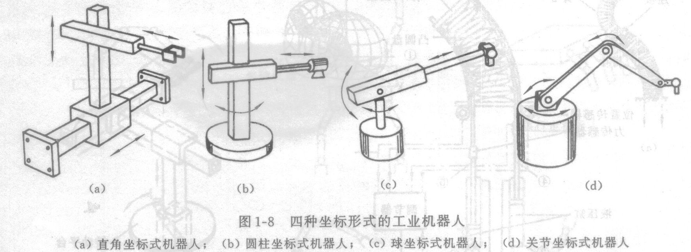
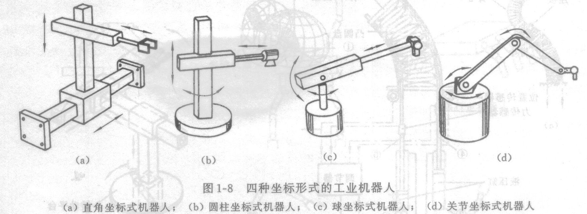

工业机器人的典型应用包括焊接、刷漆、组装、采集和放置（例如包装、码垛和 SMT）、产品检测和测试等; 所有的工作的完成都具有高效性、持久性、速度和准确性。其为面向工业领域的多关节机械手或多自由度的机器装置，它能自动执行工作，是靠自身动力和控制能力来实现各种功能的一种机器。它可以接受人类指挥，也可以按照预先编排的程序运行，现代的工业机器人还可以根据人工智能技术制定的原则纲领行动。
工业机器人其实就是将数控机床的伺服轴与遥控操纵器的连杆机构联接在一起，预先设定的机械手动作经编程输入后，系统就可以离开人的辅助而独立运行。这种机器人还可以接受示教而完成各种简单的重复动作，示教过程中，机械手可依次通过工作任务的各个位置，这些位置序列全部记录在存储器内，任务的执行过程中，机器人的各个关节在伺服驱动下依次再现上述位置，故这种机器人的主要技术功能被称为“可编程”和“示教再现”。
工业机器人最显著的特点有以下几个：
工业机器人由主体、驱动系统和控制系统三个基本部分组成。主体即机座和执行机构，包括臂部、腕部和手部，有的机器人还有行走机构。大多数工业机器人有3～6个运动自由度，其中腕部通常有1～3个运动自由度；驱动系统包括动力装置和传动机构，用以使执行机构产生相应的动作；控制系统是按照输入的程序对驱动系统和执行机构发出指令信号，并进行控制。
工业机器人按臂部的运动形式分为四种。直角坐标型的臂部可沿三个直角坐标移动；圆柱坐标型的臂部可作升降、回转和伸缩动作；球坐标型的臂部能回转、俯仰和伸缩；关节型的臂部有多个转动关节。
工业机器人按执行机构运动的控制机能，又可分点位型和连续轨迹型。点位型只控制执行机构由一点到另一点的准确定位，适用于机床上下料、点焊和一般搬运、装卸等作业；连续轨迹型可控制执行机构按给定轨迹运动，适用于连续焊接和涂装等作业。
机器人编程(Robot Programming)为使机器人完成某种任务而设置的动作顺序描述。机器人运动和作业的指令都是由程序进行控制，常见的编制方法有两种，示教编程方法和离线编程方法。其中示教编程方法包括示教、编辑和轨迹再现，可以通过示教盒示教和导引式示教两种途径实现。由于示教方式实用性强，操作简便，因此大部分机器人都采用这种方式。离线编程方法是利用计算机图形学成果，借助图形处理工具建立几何模型，通过一些规划算法来获取作业规划轨迹。与示教编程不同，离线编程不与机器人发生关系，在编程过程中机器人可以照常工作。
本工作室主要从事与ABB机器人的在线和离线编程，离线编程是扩大机器人系统投资回报的最佳途径。借助ABB模拟与离线编程软件RobotStudio，可在办公室PC机上完成机器人编程，无需中断生产。利用RobotStudio提供的各种工具，可在不影响生产的前提下执行培训、编程和优化等任务，不仅提升机器人系统的盈利能力，还能降低生产风险，加快投产进度，缩短换线时间，提高生产效率。RobotStudio以ABB VirtualController为基础而开发，与机器人在实际生产中运行的软件完全一致。因此RobotStudio可执行十分逼真的模拟，所编制的机器人程序和配置文件均可直接用于生产现场。
中国成最大工业机器人市场，“机器换人”已是大势所趋。
主要面向具体应用的机器人技术基础，比一般教材的内容要简单，需要了解一些最基本的概念，比如：工业机器人的类型，工业机器人的结构，工业机器人的运动控制系统，工业机器人的基本组成，工业机器人的技术参数，工业机器人的分类，主要品牌及其特点等，这部分内容主要使得同学可以快速进入机器人的操作阶段。
 

可培训内容如下：
主要是认识ABB机器人的本体，控制柜系统组成，程序数据的创建，电子阅读手册的使用，一些机器人的操作，RAPID程序的实现，示教编程等等。具体可培训内容如下：
可培训内容如下(初级)：
可培训内容如下(中级)：
此部分主要面向高级用户，选用多的ABB工业机器人离线编程仿真软件为平台，并选择常用的工业机器人搬运、码垛为载体来学习编程与仿真方法，选择焊接工作站、带传动链的工业机器人工作站作为组建站方法的学习项目。能使同学了解工业机器人离线编程仿真方法，掌握利用相关建模操作来组建常见机器人工作站的方法和步骤，时用了很多Robotstudio的高级功能和技巧，也可以做出非常逼真的模拟。
示教编程主要是面向初/中级用户，在更复杂的编程中显得力不从心，于是，离线编程逐渐成为当前较为流行的一种编程方式。离线编程，是通过软件，在电脑里重建整个工作场景的三维虚拟环境，然后软件可以根据要工加零件的大小、形状、材料，同时配合软件操作者的一些操作，自动生成机器人的运动轨迹，即控制指令，然后在软件中仿真与调整轨迹，最后生成机器人程序传输给机器人。离线编程克服了在线示教编程的很多缺点，充分利用了计算机的功能，减少了编写机器人程序所需要的时间成本，同时也降低了在线示教编程的不便。目前离线编程广泛应用于打磨、去毛刺、焊接、激光切割、数控加工等机器人新兴应用领域。离线编程有很多优点，如下：
像打磨、喷涂行业，不再像搬运时那样只需示教几个点了，而是几十甚至几百个，离线编程在这方面优势十分突出。
这是区别于示教编程的一个显著的优点。轨迹生成后可以在软件中检测一下机器人走的路径是否是正确的，然后可以对生成的轨迹进行优化，这些只需要在虚拟环境中操作就可以了。
因为系统执行过程中发生错误是不可避免的，我们首先要有碰撞检测功能，检测到程序执行过程中出现问题的地方。在程序仿真的时候，打开干涉检查功能，会对轨迹中的错误做初步检测。生成后置程序的时候，会对后置的机器人数据做最后的检测过滤，如果发现有不符合程序正常运行的数据，会拒绝生成后置代码。这样做的目的是最大程度减少，来自程序设计本身的失误。
示教编程另一个让人很头痛的问题，就是面对当前多件小批量的生成方式，对于一个新的零件，总要停下生产线来编程，导致机器人被闲置，造成资源浪费。有了离线编程，在当前生产线还在工作时，编程人员就同时在旁边设计下一批零件的轨迹了，这就是工业4.0之中的效率。已经有许多用户采用Robotstudio，在生产时进行同步编程了。
可培训内容如下：
机器人实操
目前本工作室机器人尚未到位，计划订购ABB型号机器人，敬请期待：）
如果确实想学习实操，可以有地方进行联系。